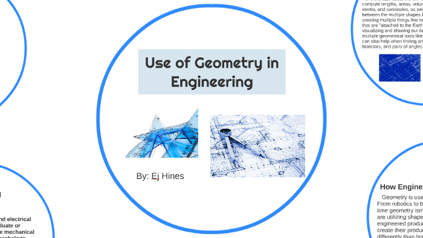
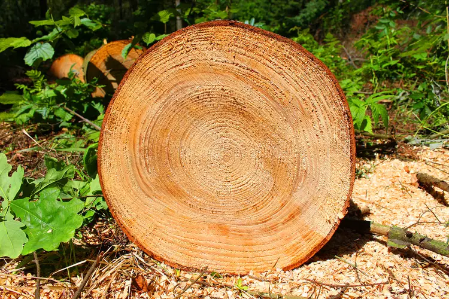
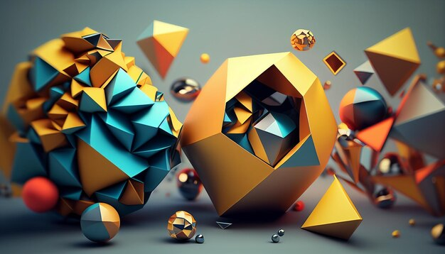
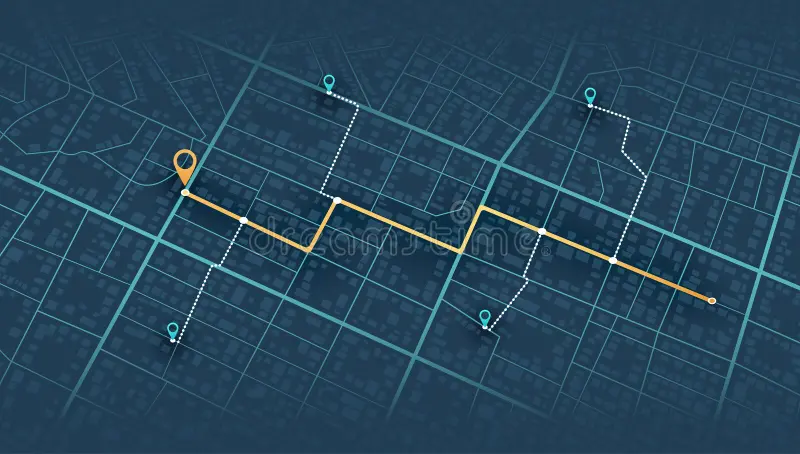

Architecture and Construction:
Architects and engineers utilize geometric principles extensively in designing and constructing buildings, bridges, and other structures. Concepts like symmetry, angles, and proportions are crucial for ensuring stability, functionality, and aesthetic appeal.Art and Design:
Artists use geometric shapes to create compositions, patterns, and perspectives in paintings, sculptures, and graphic design. Geometric shapes are fundamental to various art movements like Cubism and Constructivism.

Engineering and Technology:
Geometric shapes are essential in fields like mechanical engineering, robotics, and aerospace engineering. They are used in designing and building machines, vehicles, and other complex systems.

Nature:
Many natural phenomena exhibit geometric patterns. For example, snowflakes have intricate hexagonal shapes, while honeycombs are made up of perfectly arranged hexagons. Understanding these geometric patterns can help us understand the natural world better.

Computer Graphics and Gaming:
Geometric shapes are the building blocks of 3D models and computer graphics. They are used to create realistic and immersive environments in video games and virtual reality experiences.
